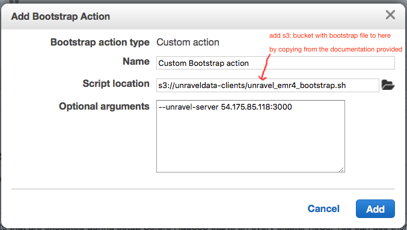

Part 4: Modify Amazon EMR Cluster Bootstrap/Setup
Tip
Follow these steps only if you have an Amazon EMR cluster.
Introduction
This topic explains how to modify and Amazon EMR cluster's bootstrap/setup for Unravel Server 4.0. For instructions that correspond to older versions of Unravel Server, contact Unravel Support.
Steps marked [HVD] are for production high volume and durable installations can be skipped for PoCs.
Workflow Summary
Add your AWS account number(s) to the Unravel Data main s3 bucket policy.
Get the bootstrap script(s).
Integrate the bootstrap script(s) into your Amazon EMR cluster(s).
Table of Contents
1. Add Your AWS Account Number(s) to the Unravel Data Main S3 Bucket Policy
2. Get the Bootstrap Script(s)
3. Integrate the Bootstrap Script(s) into Your Amazon EMR Cluster(s)
For Persistent ("Long-Running" or "Existing") Amazon EMR Clusters
1. Add Your AWS Account Number(s) to the Unravel Data Main S3 Bucket Policy
Note
Prior to doing below steps, ensure that your AWS account number(s) is added to the Unravel Data main s3 bucket policy for s3://unraveldata-client by asking Unravel Support to do this; alternatively, the scripts can be found on Unravel Server in the directory /usr/local/unravel/install_bin/unraveldata-clients.
2. Get the Bootstrap Script(s)
To gain access to the s3 bucket that contains the bootstrap scripts (s3://unraveldata-clients/), add a one-time new Inline policy to EMR_DefaultRole as follows:
In the IAM management console on the left-hand side, click Roles | EMR_DefaultRole.
ClickInline Policies | Create Role Policy, and select Custom Policy.
Click Select.
Enter the policy name as you wish.
Copy and paste below policy into the Policy Document:
{ "Version": "2012-10-17", "Statement": [ { "Sid": "getunraveldataclients3files", "Effect": "Allow", "Action": [ "s3:ListBucket", "s3:Get*" ], "Resource": [ "arn:aws:s3:::unraveldata-clients/*" ] } ] }Save it by clicking Apply Policy.
When you create a new Amazon EMR cluster, be sure to add a bootstrap action as shown in the IAM screenshot below. You need to copy and paste the full pathname of the bootstrap action (script) into the Script location field. The full pathname is the s3 bucket name plus the filename of the script.
Important Note: Do not use the  folder glyph
folder glyph
|  |
For guidance on which script to use, see the table below.
|
File |
S3 Bucket |
Local Directory |
Applies To |
|---|---|---|---|
|
|
s3://unraveldata-clients/ |
|
Amazon EMR 3.x Hive |
|
|
s3://unraveldata-clients/ |
|
Amazon EMR 4.x Hive |
3. Integrate the Bootstrap Script(s) into Your Amazon EMR Cluster(s)
For Persistent ("Long-Running" or "Existing") Amazon EMR Clusters
Hive Applications:
Unravel does not load data from a cluster until the cluster is instrumented. Use the steps here to set up an existing cluster.
Identify the LOCAL_IP address of your Unravel Server.
Download
s3://unraveldata-clients/unravel_emr_setup.shusing the S3 console or 'aws s3' command or other utility OR get it from the Unravel Server ininstall_bin/unraveldata-clients.scp
unravel_emr_setup.shto/tmpof the cluster's master node (ssh user ishadoop).Open an SSH session to the cluster's master node (ssh as user
hadoop) and then do ashadoop:cd /tmp aws s3 cp s3://unraveldata-clients/unravel_emr_setup.sh . chmod +x unravel_emr_setup.sh ./unravel_emr_setup.sh --unravel-server $LOCAL_IP:3000
Tip
To uninstall Hive instrumentation on an Amazon EMR cluster (perhaps because you want to upgrade the instrumentation), you simply run the same install script again with the
uninstallargument:cd /tmp aws s3 cp s3://unraveldata-clients/unravel_emr_setup.sh . chmod +x unravel_emr_setup.sh ./unravel_emr_setup.sh --uninstall
For Transient Amazon EMR Clusters
Hive Applications:
This is similar to the previous section on integrating an existing cluster except the script used as a bootstrap step is one of the following files:
|
File |
S3 Bucket |
Local Directory |
Applies To |
|
unravel_emr_bootstrap.sh |
s3://unraveldata-clients/ |
|
Amazon EMR 3.x Hive |
|
unravel_emr4_bootstrap.sh |
s3://unraveldata-clients/ |
|
Amazon EMR 4.x Hive |
Spark Applications:
The Unravel Server does not load data from a Spark cluster until the cluster is instrumented. Use the steps here to set up an existing cluster.
Identify the LOCAL_IP address of your Unravel Server
Download
s3://unraveldata-clients/unravel_emr_spark_setup.shusing the S3 console or 'aws s3' command or other utility OR get it from the Unravel Server ininstall_bin/unraveldata-clients.scp
unravel_emr_setup.shto/tmpof the EMR cluster master node (ssh user isec2-user).Open an SSH session to the cluster's master node (ssh user is
ec2-user) and then do asec2-user:cd /tmp sudo ./unravel_emr_spark_setup.sh --unravel-server \ $LOCAL_IP:3000 --client
Tip
Change
--clientto--clusterif you use the Spark driver in cluster mode.